Launched Commercial Product / Blender Add-on
Cyber Projection Toolkit
An independently developed and commercially released Blender add-on that turns a complex holographic projection workflow into a reusable, configurable tool for 3D artists and visual creators.
View Live Product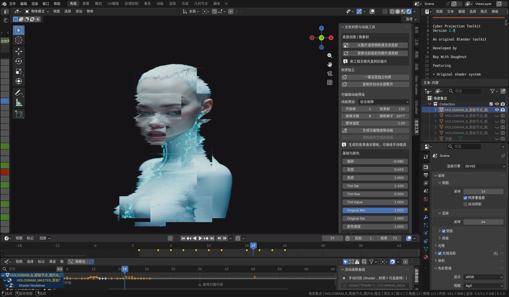
A launched commercial Blender add-on shaped by real creator workflow evidence.
I found a production bottleneck and turned it into a repeatable product.
Building a holographic projection manually meant recreating the same plane, media nodes, shader logic, animation controls and distortion settings for every new asset. The technical setup was slow, easy to break and distracted from the visual decision.
I reviewed recurring questions in creator comments, resource-claim feedback and technical-support records to define the highest-friction workflow problems before structuring the add-on.
Every scene started from zero.
Artists had to rebuild a multi-step node and material structure before they could judge the image.
Small changes required technical editing.
Glitch timing, colour and media replacement were scattered across the workflow instead of controlled from one place.
Duplicates could affect one another.
Shared materials made it difficult to build several independent projections in the same production scene.
The toolkit packages the repeated technical layer into a creator-facing workflow, so visual direction becomes the main task.
One product, independently taken from workflow research to public release.
- Identified a repeatable production problem through personal Blender practice
- Designed the add-on structure and consolidated shader controls
- Developed and tested image, video, glitch, RGB split, scanline and flicker functions
- Built presets, demo scenes and installation documentation
- Created the product identity, launch visuals and feature demonstration
- Published the commercial product through an owned storefront and Blender community channel
The manual workflow is compressed into six creator-facing functions.
Each function removes a specific production barrier while keeping the final look adjustable inside Blender.
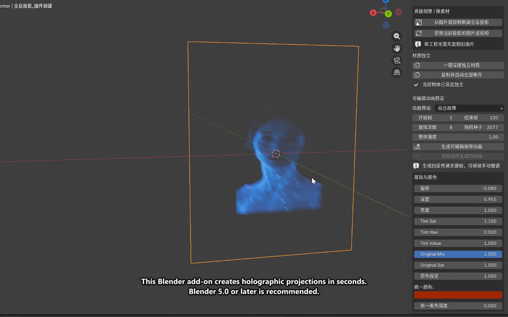
Select a source file and create the projection directly from the add-on sidebar.
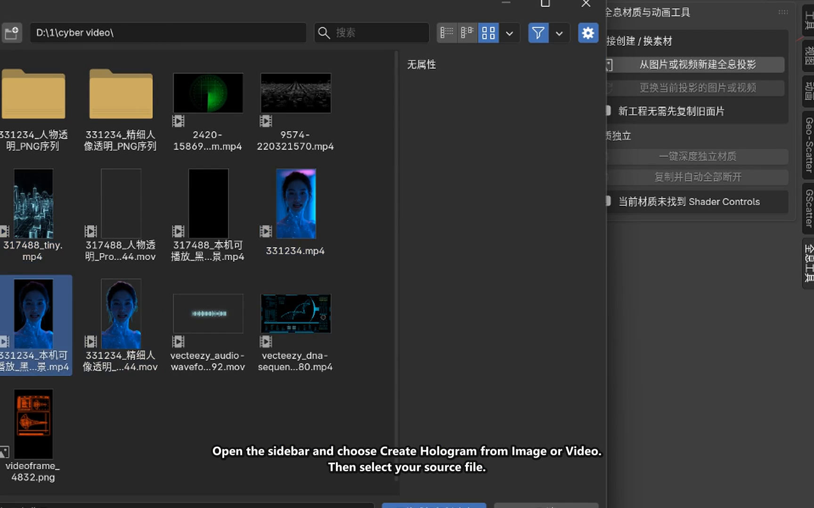
The projection plane, material and media connection are generated as one production-ready setup.
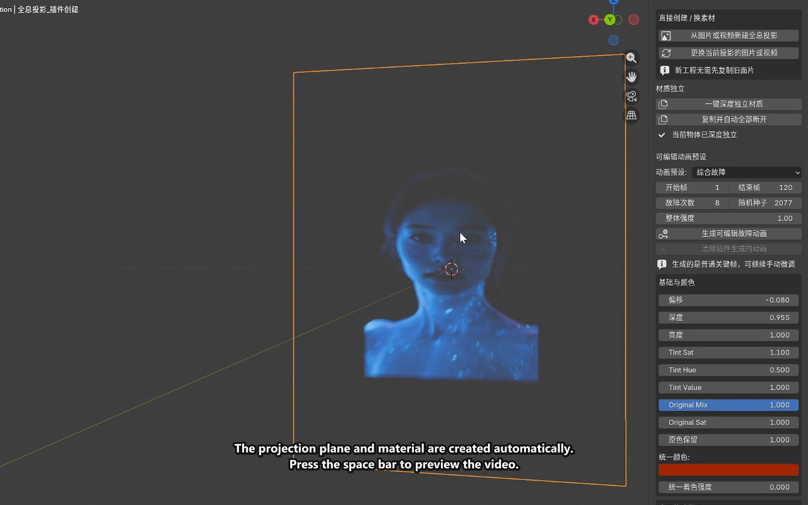
Built-in interference, scan, RGB and combined glitch presets shorten early exploration.
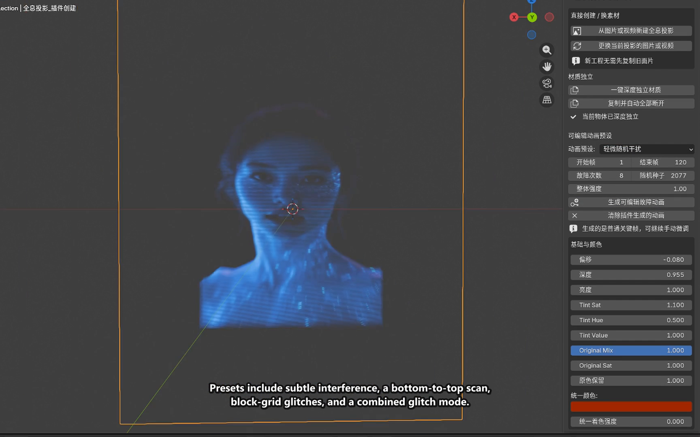
Frame range, count, seed and intensity expose the motion system without reopening the node graph.
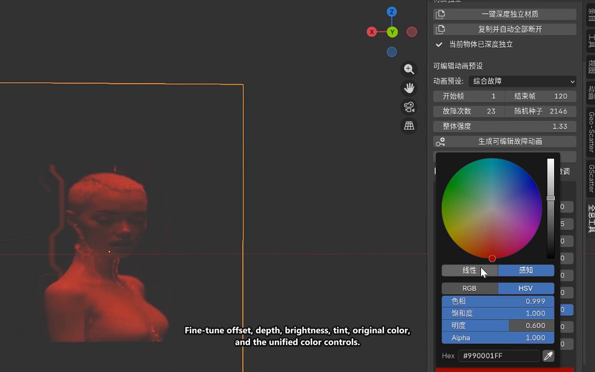
Offset, brightness, tint and original-colour balance are consolidated for faster visual decisions.
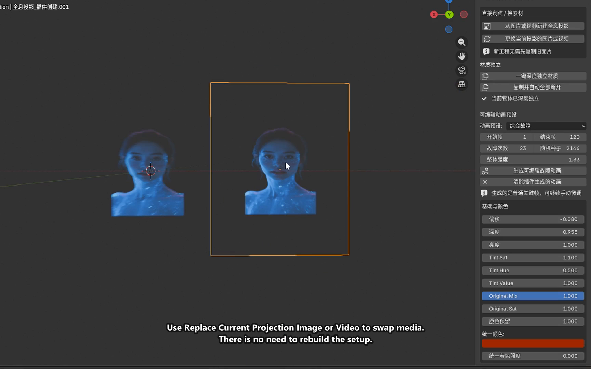
Swap the current image or video while preserving the projection system and its controls.
One system supports different media and distinct visual directions.
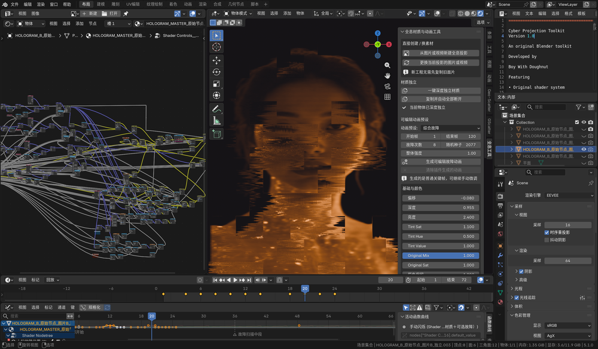
I tested the add-on as a production tool, not only as working code.
The testing process focused on repeatability: whether the system stayed controllable when media changed, settings became more complex and multiple projections shared one scene.
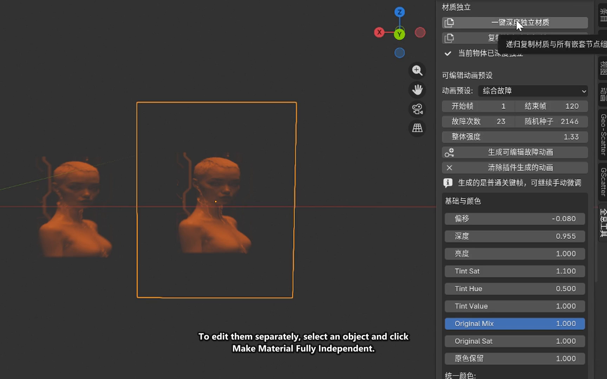
Editing one copy could unintentionally change every projection using that material.
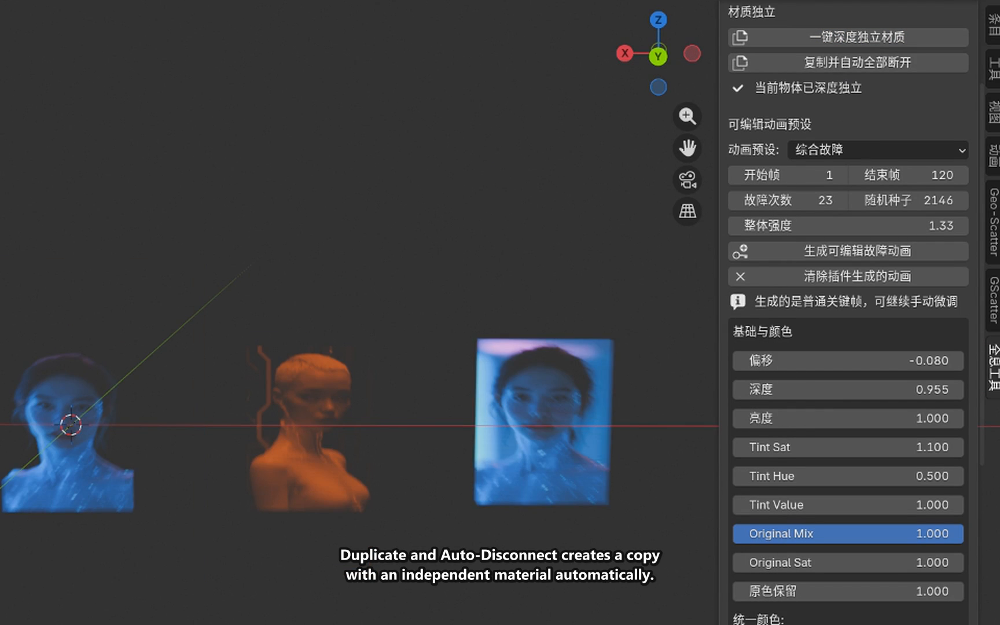
I added controls that create an independent material copy, making variation safer and faster.
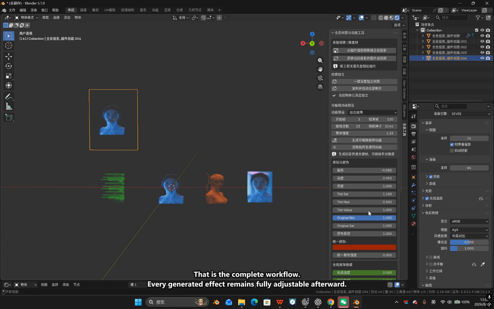
Final testing confirmed that each projection could use its own media, colour and settings without affecting the others.
Installation, media import, parameter understanding, effect adjustment and animation output.
Checked creation and replacement across both supported media types.
Tested fast preset selection and detailed parameter-level adjustment.
Validated isolated projections and several independently art-directed copies.
Packaged installation, example scenes and documentation for use outside my own setup.
Built for a real creator audience, not a hypothetical persona.
The add-on launched through an owned resource platform already used by 460+ creators and supported by 1.1K+ digital-resource deliveries. These figures establish the real audience around the product without presenting every platform user as a plugin customer.
People reached through the wider Boywithdoughnut digital resource platform.
Open owned storefrontDigital resource downloads and claims across the existing creator ecosystem.
View platform evidenceOwned commerce and delivery through Huotan, with public discovery through the Blender community.
Open community launchResearch, development, testing, product design, documentation, launch and support.
View live productA direct path from community discovery to owned product delivery.
I structured the launch as a simple product funnel: feature demonstration and community discovery lead to a dedicated product page, which handles purchase, file delivery and user contact. This creates a verifiable commercial pathway without separating the tool from the broader creative practice that generated it.
Feature content and a public Blender community listing introduce the problem and result.
The English tutorial, interface screenshots and feature breakdown explain how the product works.
An owned storefront handles the product page, transaction and digital-file delivery.
The add-on, demonstration scene, sample media and README support first use and adaptation.